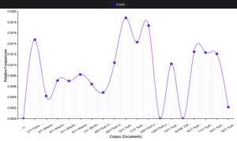

Introduction
The internet is a paradox unto itself. Despite being set up by lines of code and strict rules, it is fluid on how it works, changing as the ideas of the world at large shift in real time. If you could put the internet on a physical timeline, you would be able to see how public perceptions of an event or incident can change over time within a demographic. No case is more prevalent than looking at the conception and formations of conspiracy theories regarding the attacks during 9/11.
The founder of the Internet Archive is Brewster Kahle. His focus was to provide “universal access to all knowledge”. This led to the creation of his first website, the “Thinking Machines”, then, the “Wide Area Information” and later “Alexa Internet” which finally led to the formation of the “Internet Archive” in 1996. The tool we used is the Wayback Machine, which is an extension of the “Internet Archive”.
The Wayback Machine hosts a large majority of the data stored on the internet and has saved over 652 billion web pages from 1996 to now. A large hot spot of activity, that can be noticed on the internet, were the terrorist attacks that happened on September 11th, 2001. Our project utilizes the Wayback Machine in order to track data from the 9/11 terrorist attacks. We analyzed the networks in which this data comes from and where it ended up spreading. 9/11 conspiracies became popular with films like Loose Change and websites like 911truth.org, which aim to create a false narrative in the audience's head. Theorists have claimed many things, for example; the deep state staged attacks or the U.S. government knew about the attacks ahead of time, and, of course, the alleged fact that jet fuel could not melt steel beams so, the towers could not have possibly fallen. These theories spread on the internet and mainly through social media, conspiracy websites, and political movements with the goal to expose the deep state and create a sense of distrust between the people and the government. We started by collecting websites for our project and analyzed early articles on conspiracy theories after the initial attack. Our primary method of doing so was by following hyperlinks that have been collected into more of a singular category of theories. Our guidelines for the websites are that they have to focus on the media structure, social structure, and the spread of belief in 9/11 conspiracy theories.
Findings
One website that we heavily focused on was 911truth.org. This website's primary purpose is to push false narratives/information to its readers. We've collected snapshots of the articles they have published, dating as early as 2002. The first, and arguably the most infamous conspiracy theory that we looked at, was the idea that jet fuel can't melt steel beams when superheated. This theory rose to relevance after FEMA released its report stating that the inspection of the World Trade Center was insufficient which, in itself, led to a full-scale investigation of the National Institute of Standards and Technology or NIST for short. This was just the beginning of what we could find when diving into the Wayback Machine.
Another major conspiracy theory that we analyzed was the hearing for the lack of response from the North American Air Defense command (NORAD). This article aims to set a false narative against NORAD, blaming the lack of fighter jets and general response to the 9/11 attacks on the incompetence of the government. This article uses the window of time that the first 9/11 flight veered off its course, to the flight that hit the Pentagon as a way to accuse the government of purposefully holding back any response. This blame soon focused on the Federal Aviation Administration (FAA), as the minutes continued to pass the response time became slower and slower.
Data Visualization
These graphs chart the frequency in which these specific words were used over 19 different articles that we collected from 911 truth.org. This gave us major insight into what this community was focused on during these moments in time, since the higher the usage, the more people were using the word. With the higher spikes, there was often lots of talk about a possible cover-up and the destruction of the towers upon the sites, whilst later we observed the frequency in which the word “trade” was used more frequently, possibly hinting towards the rise of theories surrounding the World Trade Center itself. This helped a lot, as the textual analysis tool helped us filter through a lot of click-bait and filler this website had to offer and let us pick out keywords that were relevant to our research.
Look at Media for example, there was a downward trend in the word usage as the word Media. As the attacks were fresh, discussions of how the media covering the events fueled the theory that the attacks were known about beforehand and that the government let it happen as an excuse to go to war, making sure that the event was covered to make America ready for war. However that changed as the average conversation about 9/11 started dwindling, so did the talk about how the media played into it. However there was a spike in 2015-2016 due to the presidential race, with the oncoming popularity of the “fake news/fake media” conspiracy that former candidate Donald Trump kept proclaiming, a popular ideology within the conspiracy theory that took root within other sects of conspiracy theories. That theory was that the Media/Major News organizations fed propaganda to the American public and lied to them. As he kept making those claims, the belief in those theories surged.
This was important to keep track of as the constantly shifting dynamics of conspiracy theories can, and has led to the complete restructuring of certain ideas and thinking.
Word Frequency and Ideas Over Time
Place in the Literature
One of the better places to look is the website “9/11 Truth” Both at the beginning and further along the timelines. Scholars generally agree that conspiracists show the most activity when an event appears inadequate or when no explanation exists. These conspiracy theories are then endorsed by other members of the public and carried onto later years, possibly adjusting the original claim and turning it into a totally different idea. 9/11 was no different, the event frightened the United States and created public discomfort between the people and the government, spawning the stream of conspiracies and conspiracists alike. During our interview with Dr. Stempel, he introduced the idea that there is right wing conspiracy thinking and that there is left wing conspiracy thinking. From his perspective “Right wing media gets brought to the mainstream more quickly” than “it does on the left” this is because it is the more dangerous and flashy groupings of conspiracy theories.
Significance
Conspiracies have begun flooding American culture and society in recent years. These conspiracies create communities of like minded people, with polarized viewpoints on social and political topics. This project tracked one of these conspiracies and the reason a project like this worked is because of our abilities to map shifts in human ideas over time. This can help monitor n help to delegitimize democratic government, demonize innocent groups that have been falsely portrayed as evil, and shift attention away from the real causes/perpetrators.
There are many questions that our project answered, like the significance of social mediaand analyze psychological patterns within humans. We also have another tool to help monitor sociological phenomena. It is important to know the effects of these conspiracy theories; they ca, how these theories spread online, and the current state of the 9/11 conspiracy community. Scholarly journal articles can give a fair analysis of the sociology behind the ways people of this time period were thinking and how specific events affected political groups. This was significant when doing textual and network analysis for this data set. Our project needed the perspective of sociological theories and patterns to draw conclusions from the data in the Wayback Machine. When taking the ideas from scholarly journal articles, and applying them to the data set and drawing conclusions, our project answered our questions about 9/11 conspiracy theories and could possibly set a framework to look at other conspiracy theories that are worth investigating.
Timeline
Check out our subject matter expert interview and our sources: